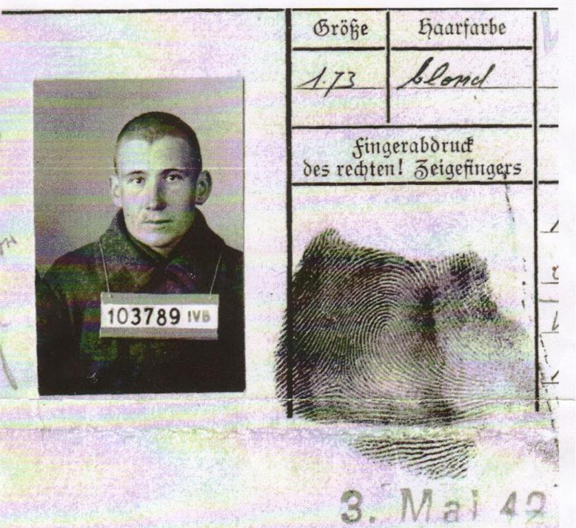
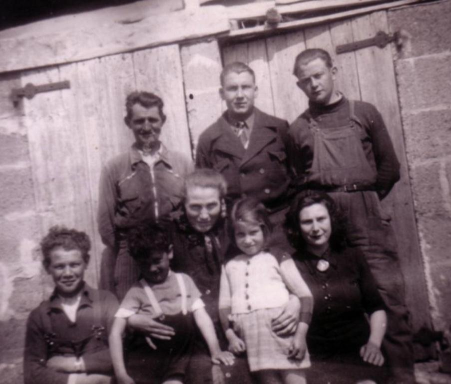
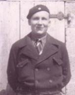
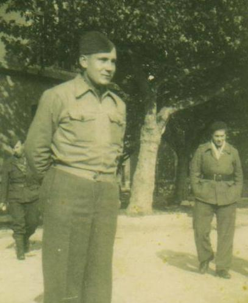
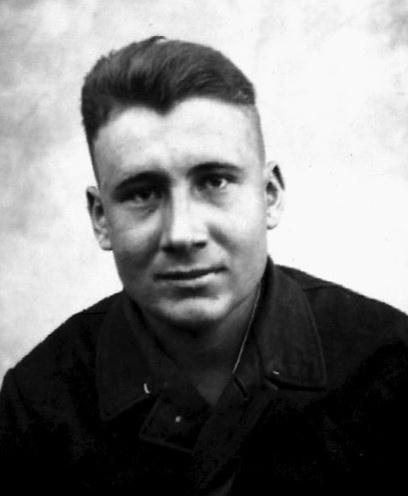
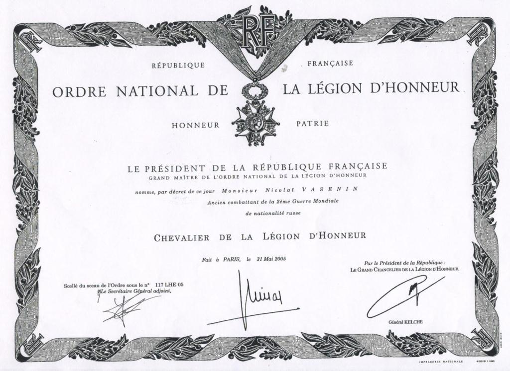
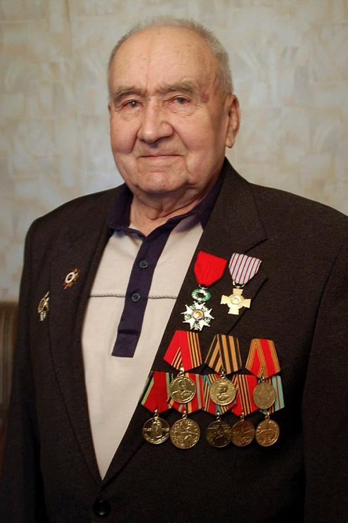

Il y a quelques mois, Nikolaï Maksimovitch Vasenin, décédait. Ancien combattant de l’Armée Rouge durant la Seconde guerre mondiale, il était également un des rares soldats russes à avoir été honoré de la croix de chevalier de la Légion d’Honneur, la plus haute distinction française, pour sa participation active à la Résistance française au nazisme.
Nicolaï Vassenine est né le 5 décembre 1919 à Pychak, petit village dans la région de Kirov. Ayant terminé l’école à sept ans, il entre à l’Ecole maritime de Mourmansk, où il obtient le diplôme de mécanicien. Le 20 novembre 1939, il a à peine vingt ans, lorsqu’il est mobilisé par les Soviétiques comme simple soldat dans le 27ème régiment d’infanterie motorisé de la 17ème division d’infanterie motorisée.
En janvier 1940 durant la guerre russo-finlandaise, il est envoyé à Mourmansk où il est blessé le mois suivant. Au moment de l’invasion hitlérienne, il se retrouve, durant l’été 1941 avec le même régiment devant Minsk. Le 9 juillet, les Allemands encerclent quatre cent mille soldats russes dans la poche de Bialystok-Minsk.
 Fiche de prisonnier des Allemands de Nicolaï VaseninLes Soviétiques doivent se rendre, c’est une des plus sévères défaites de l’Armée Rouge au début de la guerre. Nicolaï Vasenin est fait prisonnier par la Wehrmacht, avec plusieurs dizaines de milliers de ses camarades et se retrouve détenu dans un stalag près de Nuremberg, la capitale emblématique du nazisme. Nicolaï tente une première fois de s'évader en mai 1942 mais il est arrêté trois mois plus tard par les gendarmes.
Il est alors envoyé dans divers commandos de travail, surveillés par la Landwehr, où il creuse des trous afin d’installer des lignes télégraphiques entre la France et l’Allemagne. C’est dans ce cadre que son commando arrive dans la Drôme durant l’été 1943. En France, ses conditions de détention sont relativement souples, les Allemands considérant sans doute que les possibilités de fuite étaient quasiment nulles pour des hommes ignorant tout de ce pays et n’en parlant pas la langue.
Nicolaï parvient, le 8 octobre 1943, à échapper à la surveillance de ces gardiens et erre dans les campagnes, apeuré par les chiens qu'il croit être ceux des Allemands à sa poursuite. Il se cache dans le relatif couvert des ceps de vignes, dans les bois et après un parcours d’une dizaine de jours, se trouve affamé et épuisé aux portes du village de Saint-Sorlin-en-Valloire, où il se présente devant une maison cossue. Les habitants de la maison le recueillent et le conduisent, dès le lendemain, directement à l’un des chefs de la Résistance parmi les plus importants de la région : le capitaine Georges Monot qui commande l'une des cinquante compagnies du maquis du département de la Drôme. Blessé et affaibli par ses deux semaines de pérégrination, il est soigné par Jeanne, la fille du capitaine et reste caché dans cette famille. Ce fut la première maison française où il vécut durant quelques jours, le temps pour Monot et les chefs des résistants de lui fournir des faux papiers et de lui trouver un endroit plus sûr que la maison familiale de Georges Monot beaucoup trop exposée. Pour le jeune russe qui vient de traverser quatre années de guerre dont deux en détention, les soins prodigués par Jeanne font qu’il tombe sous le charme de son « infirmière ». La passion amoureuse ne sera, semble-t-il, pas partagée, mais Nicolaï conservera à jamais un indéfectible sentiment amoureux pour la jeune française.
 Nicolaï Vasenin dans la famille des BoninLe 20 octobre 1943, Nicolaï intègre officiellement les rangs de la compagnie Monot et est envoyé dans un maquis proche de Saint-Sorlin-sur-Valloire. Près d’une trentaine de résistants vivent dans une maison isolée non loin de la ferme d’une famille de paysans : celle des Bonin.
Nicolaï s’y rend de temps en temps, avec les deux ainés de cette famille de douze enfants, Jules et Fernand, qui servent avec lui dans le maquis, et a ainsi le bonheur éphémère d’y retrouver une vie de famille. Dans les premiers temps, la communication avec les autres résistants, tout comme avec la famille Bonin, est difficile et Nicolaï dessine sur un papier pour tenter de se faire comprendre.
La maison du maquis se trouve sur une colline surplombant la localité, dominant la vallée et permettant aussi un repli aisé dans les montagnes se trouvant derrière, couvertes de bois et de forêts.
Durant son séjour au maquis, qui durera près d’une année, Nicolaï participe à toutes les opérations des résistants et se trouve à la récupération des armes parachutées d'Angleterre pour les maquisards. Mais la compagnie Monot participe ainsi à plusieurs opérations de guerre comme celle de la nuit du 7 au 8 juin 1944. Elle reçoit alors pour mission de s’attaquer à la garnison de Saint-Rambert d’Albon, nœud ferroviaire de la vallée du Rhône dans le sud de la France. Au lendemain du débarquement de Normandie, l’ordre avait été donné par le général De Gaulle à tous les maquis et à la Résistance française de passer à l’action.
Partout la Résistance devait couper les communications et ralentir les déplacements de renforts allemands, en multipliant les sabotages. Saint-Rambert d’Albon comprend une garnison d’une centaine de soldats allemands, auquel il convient d’ajouter une soixante de cheminots allemands et un nombre semblable de prisonniers soviétiques chargés de la manutention des chargements. La compagnie Monot a quatre objectifs : attaquer la salle des fêtes hébergeant le gros des Allemands, la zone où se trouvent les cheminots allemands, le QG allemand au château du Bon Repos et l'usine abritant les Soviétiques. L'opération débute mal. Un camion de la compagnie Monot tombe en panne et le groupe a finalement trois quarts d'heure de retard sur l'horaire fixé. Trop éloignés, les Résistants ne peuvent profiter de l'effet de surprise et les Allemands ont le temps d'organiser la défense. L’objectif initial est loin d’avoir été atteint et l’on dénombre, à l’issue de cette opération, sept morts et quatre blessés du côté des forces de Monot.
Si l’attaque peut apparaitre comme un fiasco, il semble néanmoins qu’elle profita à quelques prisonniers soviétiques qui purent s’échapper et rejoindre le maquis. Une partie de ces évadés russes va, à l’instar de Vasenin quelques mois plus tôt, rejoindre le maquis des Forces françaises libres. Le capitaine Monot va tout naturellement confier le commandant de ce groupe à Nicolaï Vasenin en qui il a pleinement confiance, qui deviendra la section « Nicolas », aussi appelée la « section mongole », la plupart des hommes étant originaires des républiques orientales de l’URSS. Nicolaï Vasenin est alors sous le commandement direct du lieutenant Henry Weill, un Alsacien, devenu depuis la dissolution du « groupe Gervais » bras droit du capitaine Monot. Vasenin et Weill parlant tous les deux la langue de Goethe, les échangent sont alors facilités.
L’échec de l’attaque de Saint-Rambert ne fut que partie remise, d’autres sabotages et combats eurent lieu, de plus en plus intenses jusqu’à la fuite à travers le couloir rhodanien de la fameuse XIXe Armée allemande celle qui se trouvait en stationnement dans le Sud de la France. Ainsi, le 29 août 1944, la compagnie Monot est engagée contre une compagnie de la XIXe Armée allemande partie de Saint-Rambert en direction de Beaurepaire.
Aux premiers jours du mois de septembre 1944, Nicolaï est abordé par les recruteurs soviétiques chargés de rassembler et de persuader les Soviétiques présents sur le territoire français de rentrer au pays. Après un moment passé probablement à Grenoble puis à Paris à la mission soviétique, il prend, en avril 1945, le chemin du retour via Marseille où un bateau le reconduit en Union soviétique. Il accoste avec d'autres à Odessa où ils sont accueillis par le NKVD...
A peine débarqués, ils sont tous arrêtés. Staline les a en effet tous fait condamner aux camps ou à la mort pour trahison. Les uns pour avoir été fait prisonniers plutôt que de mourir face à l’ennemi, les autres par suspicion d'être des ennemis du Peuple et des collaborateurs avec les Allemands...
Emprisonné, il est condamné à 15 années de goulag et envoyé en Sibérie pour purger sa peine. Il restera emprisonné 11 ans et ne sera libéré qu'après la mort de Staline et la déstalinisation entamée à partir de 1956.
Néanmoins, il n’est pas innocenté et sa peine est commuée en assignation à résidence en Sibérie. Il y épouse Zinaïda, une géologue de passage dans la mine où travaillent les condamnés, avec qui il aura trois enfants. Il travaillera par la suite toute sa vie comme ouvrier et contremaître dans l'Oural, dans la ville de Berezovskoïé, près d'Ekaterinbourg dans l’Oural.
C’est en pleine Perestroïka en 1985, que Nicolaï Vasenin est réhabilité et que sur les encouragements de son fils Sergueï, Nicolaï entame les démarches en direction de la France pour se faire connaître et reconnaître comme l’un des compagnons de la liberté, un des hommes auquel la France doit d’être libre.
 Diplôme de chevalier de la Légion d’HonneurAprès un long parcours, cet homme, né à des milliers de kilomètres et ne parlant pas la langue de Molière, est récompensé par la France pour ses services au sein des Forces Françaises Libres. Il reçoit de la France la carte d'ancien combattant en 1998, puis la médaille des combattants de la Résistance et enfin il est fait chevalier de la Légion d'Honneur en 2005.
Après le décès de son épouse, Nicolaï Vasenin, au crépuscule de sa vie, souhaite pouvoir revoir ces Français qu’il n’a jamais oubliés : ses camarades du maquis mais aussi Jeanne Monot, qui a toujours conservé une place particulière dans son cœur. Aidé de son fils et de Laurent Brayard, journaliste et historien, ils contactent les associations françaises d’anciens combattants et parviennent à collecter différentes informations. Mais quand, en juin 2014, Nicolaï entreprend le voyage en France, Jeanne est décédée quelques mois avant son arrivée, tout comme son dernier compagnon de maquis, Marcel Marcé.
En décembre de cette même année, Nicolaï Vasenin, âgé de 95 ans, s’éteint en ayant pu toutefois retourner sur cette terre de France qui, malgré les hostilités et les dangers de l’époque, l’avait accueilli en frère.
L’auteur tient à remercier Laurent Brayard, qui nous a autorisé à user des précieuses informations qu’il a pu collecter notamment lors de ses rencontres avec Nicolaï Vasenin.
Partager cette page